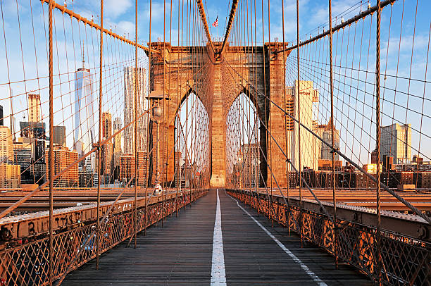
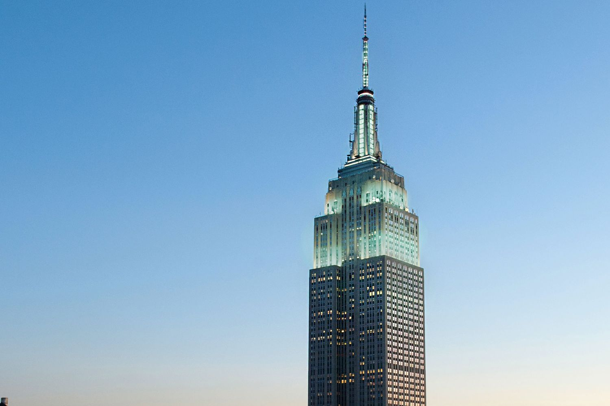
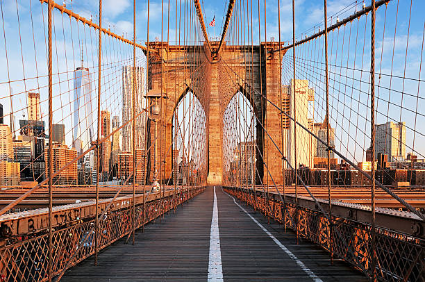
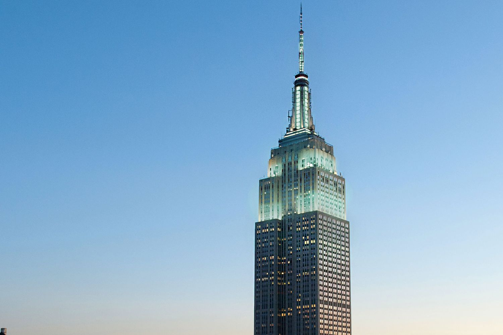
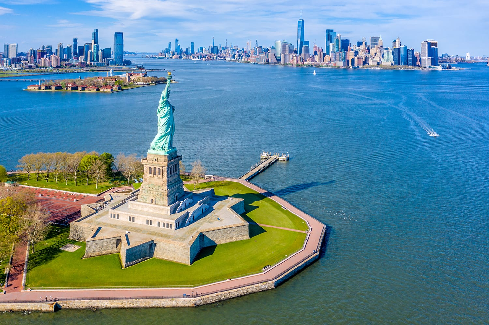
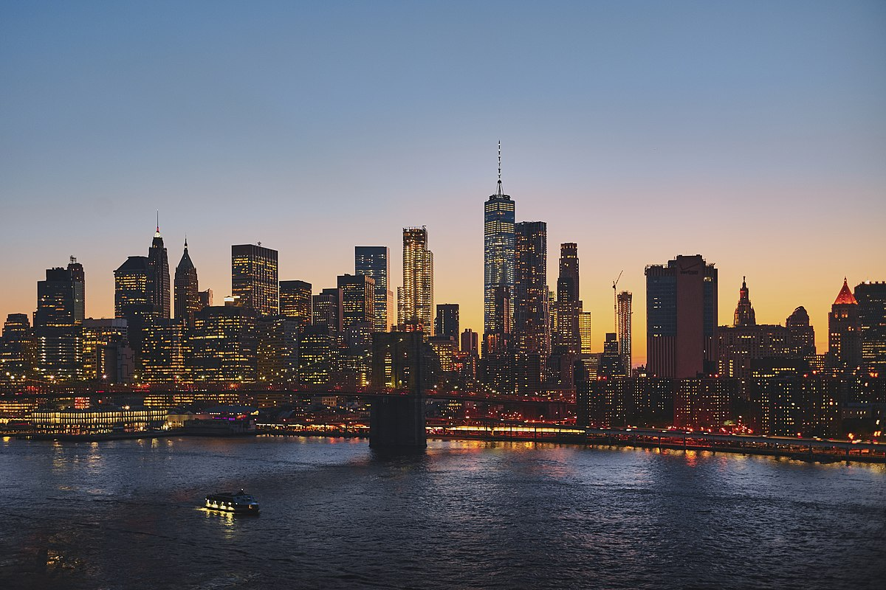
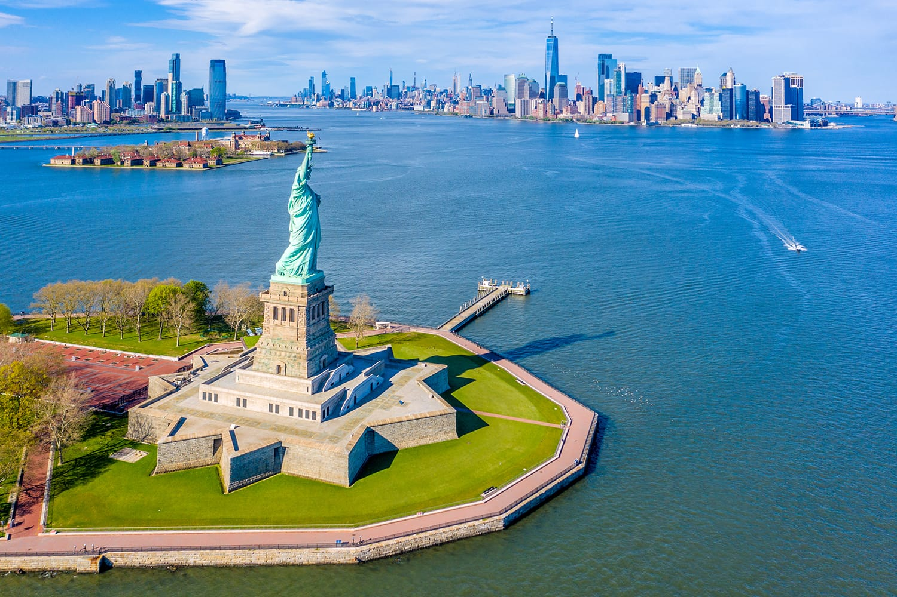
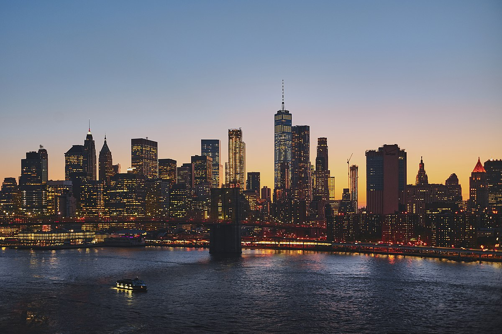

 



New York,
often called New York City or NYC, is the most populous city in the United States. With a 2020 population of 8,804,190 distributed over 300.46 square miles (778.2 km2), New York City is also the most densely populated major city in the United States, and is more than twice as populous as second-place Los Angeles.
New York City lies at the southern tip of New York State, and constitutes the geographical and demographic center of both the Northeast megalopolis and the New York metropolitan area, the largest metropolitan area in the world by urban landmass. With over 20.1 million people in its metropolitan statistical area and 23.5 million in its combined statistical area as of 2020, New York is one of the world's most populous megacities, and over 58 million people live within 250 mi (400 km) of the city.
New York City is a global cultural, financial, entertainment, and media center with a significant influence on commerce, health care and life sciences, research, technology, education, politics, tourism, dining, art, fashion, and sports. Home to the headquarters of the United Nations, New York is an important center for international diplomacy,an established safe haven for global investors, and is sometimes described as the capital of the world.
Tourism
Tourism is a vital industry for New York City, and NYC & Company represents the city's official bureau of tourism. New York has witnessed a growing combined volume of international and domestic tourists, reflecting over 60 million visitors to the city per year, the world's busiest tourist destination.
Approximately 12 million visitors to New York City have been from outside the United States, with the highest numbers from the United Kingdom, Canada, Brazil, and China. Multiple sources have called New York the most photographed city in the world.
The majority of the most high-profile tourist destinations to the city are situated in Manhattan. These include Times Square; Broadway theater productions; the Empire State Building; the Statue of Liberty; Ellis Island; the United Nations headquarters; the World Trade Center (including the National September 11 Museum and One World Trade Center); the art museums along Museum Mile; green spaces such as Central Park, Washington Square Park, the High Line, and the medieval gardens of The Cloisters; the Stonewall Inn; Rockefeller Center; ethnic enclaves including the Manhattan Chinatown, Koreatown, Curry Hill, Harlem, Spanish Harlem, Little Italy, and Little Australia; luxury shopping along Fifth and Madison Avenues; and events such as the Halloween Parade in Greenwich Village; the Brooklyn Bridge (shared with Brooklyn); the Macy's Thanksgiving Day Parade; the lighting of the Rockefeller Center Christmas Tree; the St. Patrick's Day Parade; seasonal activities such as ice skating in Central Park in the wintertime; the Tribeca Film Festival; and free performances in Central Park at SummerStage.
Points of interest have also developed in the city outside Manhattan and have made the outer boroughs tourist destinations in their own right. These include numerous ethnic enclaves; the Unisphere, Flushing Meadows-Corona Park, and Downtown Flushing in Queens; Downtown Brooklyn, Coney Island, Williamsburg, Park Slope, and Prospect Park in Brooklyn; the Bronx Zoo, the New York Botanical Garden, and the Grand Concourse in the Bronx; and the Staten Island Ferry shuttling passengers between Staten Island and the South Ferry Terminal bordering Battery Park in Lower Manhattan, at the historical birthplace of New York City.